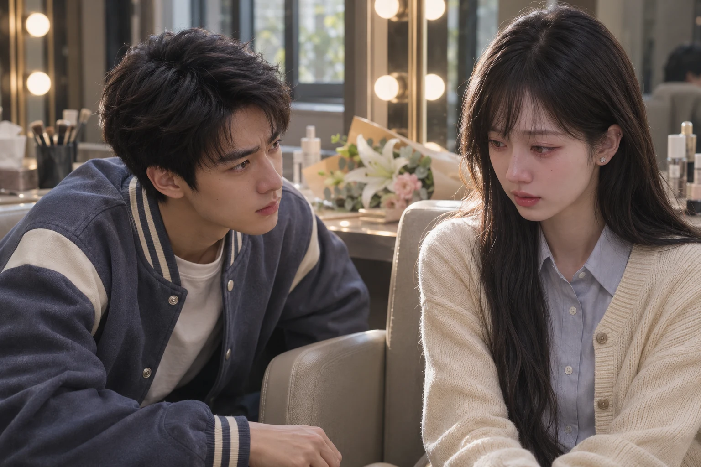
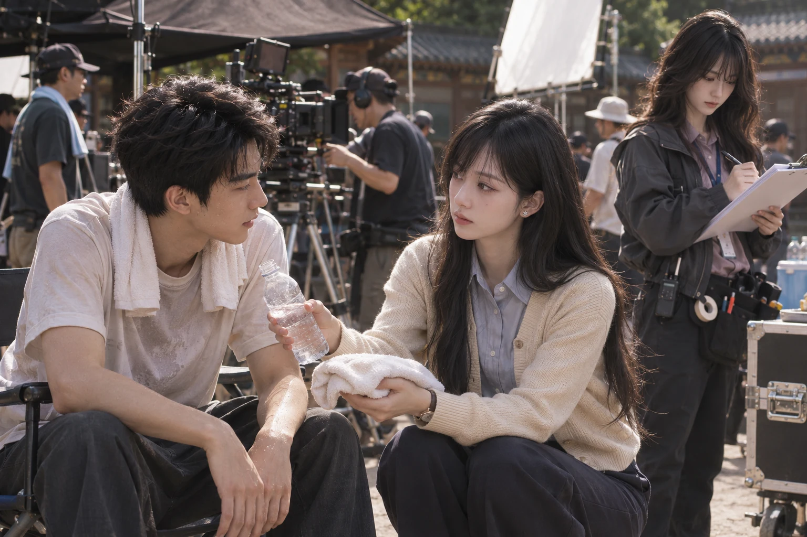
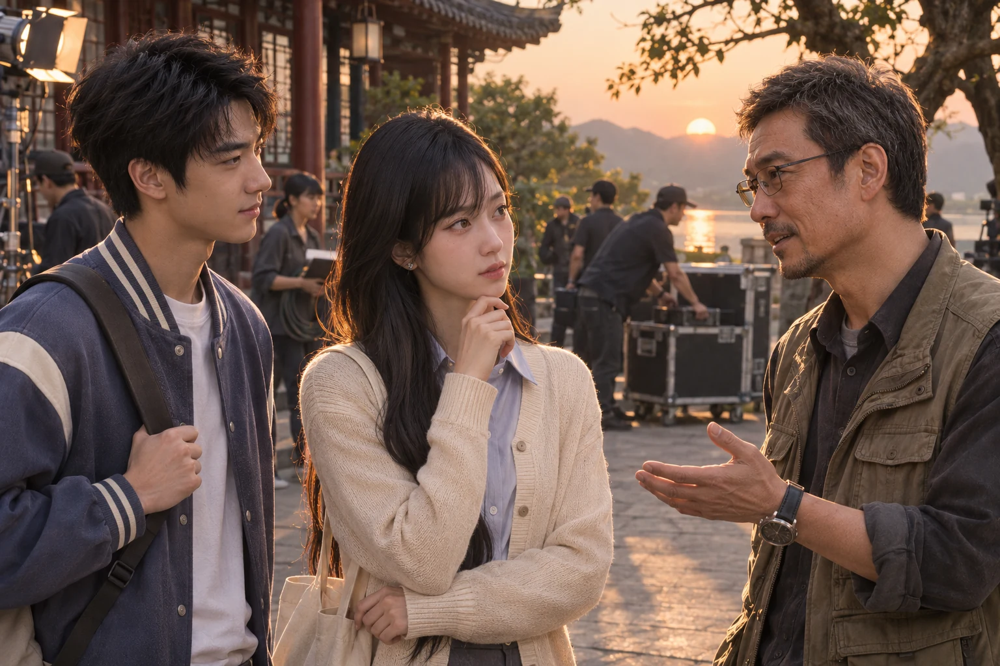
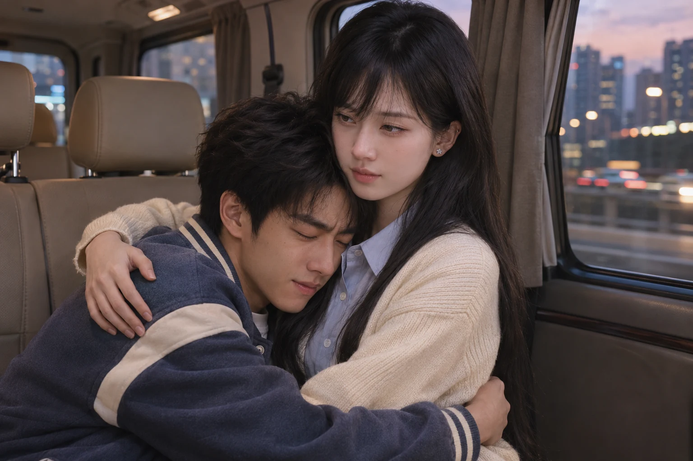
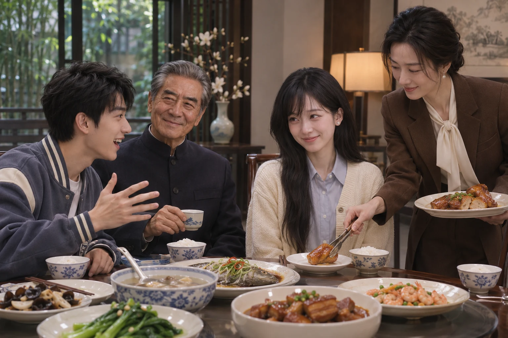

ตอนที่ 18
ชักชวน
“คุณพ่อเข้าโรงพยาบาล?” นัยน์ตาดอกท้อทรงเสน่ห์สั่นไหวขึ้นมาวูบหนึ่ง แต่เพียงไม่นานก็กลับมาสงบดังเดิม
นั่นเป็นเพราะเธอรู้อยู่แล้วว่าจุดจบเขาเป็นอย่างไร
“ผลตรวจออกมาหรือยังครับ ลุงใหญ่เป็นอะไร” ซ่งจื้อถามแทนพี่สาว ด้วยรู้ว่าเธอคงไม่อยากเสวนากับซ่งหว่านเท่าไหร่นัก
“ยังเลยค่ะ ต้องตรวจให้ละเอียด หมอบอกว่าบางทีอาจเป็นโรคกระเพาะ ถ้าคุณซ่งอวิ๋นอยากไปเยี่ยมก็ไปได้เลยนะคะ วันนี้ฉันทำงานทั้งวัน ไม่เกะกะสายตา หรือทำให้คุณรู้สึกไม่ดีตอนคุณเยี่ยมคุณพ่อแน่นอน”
ท่าทางเข้าอกเข้าใจและรู้จุดยืนของซ่งหว่านไม่ได้ทำให้ซ่งอวิ๋นรู้สึกดีขึ้นเลย หญิงสาวรู้อยู่แก่ใจว่านางเอกคนนี้อาฆาตพยาบาทขนาดไหน ที่สำคัญพ่อของเธอไม่ได้เป็นแค่โรคกระเพาะเท่านั้น แต่ไม่ว่าเธอจะรู้อนาคตอย่างไร เธอก็ไม่มีสิทธิ์พูดให้ใครฟัง
“ขอบคุณที่แจ้งให้ทราบนะคะ” ซ่งอวิ๋นกล่าวอย่างสุภาพ การควบคุมตัวเองและมีสติของเธอคงทำให้นางเอกไม่ชอบใจนัก เพราะปลายนิ้วหล่อนกระตุกอย่างเห็นได้ชัด
“ไม่เป็นไรเลยค่ะ ขอตัวก่อนนะคะ” ซ่งหว่านออกจากห้องแต่งตัวไปพร้อมอาการหงุดหงิด ความคิดที่ว่า ‘ซ่งอวิ๋นเกิดใหม่เหมือนกัน’ วาบผ่านเข้ามาในสมอง
ทว่าหญิงสาวปัดมันออกไปจากสมอง หากซ่งอวิ๋นเกิดใหม่จริง ๆ คงหาทางกำจัดเธอกับมารดาไปนานแล้ว ไม่ปล่อยให้พ่อพาเธอมาเปิดตัวกับครอบครัวซ่งง่าย ๆ แน่
เธอเชื่อว่าที่เหตุการณ์เปลี่ยนไป เพราะตัวเธอเองก็เปลี่ยนแปลงเช่นกัน ชาตินี้เธอเข้มแข็งได้เร็ว แม่จึงวางใจและจากไปไวกว่าชาติก่อน
“พี่สาวจะไปเยี่ยมคุณลุงหรือเปล่าครับ” ซ่งจื้อจิ้มแขนพี่สาวเบา ๆ เธอเอาแต่เงียบตั้งแต่ซ่งหว่านจากไป
“พี่คงไม่ได้ไปหรอก แต่อาจจะส่งดอกไม้ไปแทน นายคิดว่าทำแบบนั้นใจแคบเกินไปไหม” ซ่งอวิ๋นถามพลางจับสังเกตอากัปกิริยาของน้องชาย
“ไม่หรอกครับ ถ้าพ่อของผมพาลูกนอกสมรสมาในบ้าน ผมคงให้อภัยยากมาก คุณปู่บอกว่าทุกอย่างต้องใช้เวลา ผมเห็นด้วยกับคุณปู่ ถ้าตอนนี้พี่ยังไม่พร้อมก็ไม่ต้องฝืนใจตัวเองหรอกครับ เอาความรู้สึกตัวเองไว้ก่อน”
ซ่งอวิ๋นแสบร้อนไปทั่วโพรงจมูก เจ้าสี่รักเธอขนาดนี้ ตอนที่เขาเข้าใจผิดว่าเธอทำลายอาชีพ ทำลายชื่อเสียงในวงการจนถูกแฟนคลับซึ่งผันตัวมาเป็นแอนตี้ตามคุกคาม ไม่แปลกที่เขาจะเจ็บปวดจนพ่นคำพูดรุนแรงใส่เธอ แม้เธอจะพยายามอธิบายอย่างไรก็ไม่เป็นผล
จุดจบของน้องชายคนนี้ไม่ดีเท่าไหร่นัก เขาเลือกจบชีวิตตัวเองลงเพราะทนกระแสวิพากษ์วิจารณ์ และการตามด่าทอคุกคามต่อไปไม่ไหว ซึ่งเธอรู้จากในฝันว่าเรื่องการฆ่าตัวตายของเขา ก็มีนางเอกชักใยอยู่เบื้องหลัง
ชาตินี้เธอจะไม่ยอมให้เกิดเรื่องเหล่านั้นกับเขาอีกเป็นครั้งที่สอง
“เป็นอะไรครับพี่สาม ตาแดง ๆ เหมือนจะร้องไห้เลย” ซ่งจื้อลนลานถามไถ่อย่างตกใจ

“เปล่าหรอก พี่ไม่ได้เป็นอะไร”
ก๊อก ก๊อก ก๊อก
“พี่ขอเข้าไปนะคะ” ช่างแต่งหน้าและช่างทำผมกลับมาที่ห้องแต่งตัวอีกครั้ง
“เข้ามาได้เลยครับ” ซ่งจื้อกลับไปนั่งหน้ากระจกอีกครั้ง คิ้วคมดุจกระบี่ขมวดเข้าหากันเล็กน้อย จับจ้องพี่สาวผ่านกระจกจนแน่ใจว่าเธอไม่เป็นอะไรจริง ๆ เขาจึงค่อยวางใจ
...
งานถ่ายโฆษณากลางแจ้งของซ่งจื้อใช้เวลานาน ซ่งอวิ๋นคอยดูแลน้องชายอย่างใกล้ชิด คอยส่งน้ำและเช็ดเหงื่อประหนึ่งผู้จัดการส่วนตัว ขณะเดียวกันก็ยังเห็นซ่งหว่านทำงานในกองอย่างขยันขันแข็ง

“เลิกกอง” เสียงผู้กำกับโฆษณาวัยกลางคนดังขึ้นยามตะวันใกล้ตกดิน ทุกคนต่างเหนื่อยล้า แต่พูดจบเขากลับตรงมาหาสองพี่น้อง
“ผู้กำกับหู.. มีอะไรหรือเปล่าครับ”
“พี่สาวของอาจื้อเคยแข่งขันร้องเพลงมาก่อนใช่ไหม” เขาถามซ่งจื้อแต่สายตาจ้องใบหน้าหญิงสาว มั่นใจว่าเขาจำไม่ผิดแน่ ๆ
“เอ่อ เคยจริง ๆ ค่ะ แต่ตอนนั้นฉันยังเด็ก น่าจะสิบขวบมั้งคะ ผู้กำกับมีอะไรหรือเปล่าคะ” ซ่งอวิ๋นงุนงง ตอนนั้นเธอประกวดเพราะแม่ของเธออยากให้เธอค้นหาสิ่งที่ชอบเพิ่มเติม ซึ่งการร้องเพลงก็เป็นสิ่งหนึ่งที่เธอทำได้ดี
เมื่อก่อนเธอยังร้องเพลงกับพี่รองอยู่เลย แต่พอเขาเริ่มตั้งวงเป็นของตัวเอง เธอก็เลยไม่ค่อยได้ไปร้องกับเขาแล้ว ซึ่งดูจากสถานการณ์ในตอนนี้ เธอก็คงไม่ได้ร้องเพลงร่วมกับเขาไปตลอดชีวิต
“พอดีผมมีรายการแข่งขันร้องเพลงรายการใหม่ หากได้แชมป์การอย่างพี่สาวอาจื้อร่วมลงประกวดด้วย คงดึงคนดูได้เยอะเลย ถ้าคุณซ่งลำบากใจไม่อยากแข่งขัน แค่มาร่วมแสดงเปิดรายการก็ได้นะครับ หลาย ๆ คนคิดถึงเด็กน้อยมหัศจรรย์คนนั้นมากจริง ๆ”
“เอ่อ เรียกฉันว่าอวิ๋นเฉย ๆ ก็ได้ค่ะ อีกอย่างฉันไม่ใช่เด็กน้อยมหัศจรรย์อะไรด้วย” ซ่งอวิ๋นลำบากใจกับฉายาที่อีกฝ่ายพูดขึ้นเพื่อยกยอ พลางเอียงคอครุ่นคิด คุณลุงผู้กำกับหูสนิทสนมกับน้องชายของเธอ การช่วยดึงดูดคนดู ไม่ใช่ว่าเธอทำไม่ได้
ประเด็นคือเธอไม่ค่อยได้ร้องเพลงเลย เกรงว่าจะทำให้ตัวเองขายหน้า
“อาอวิ๋นเก็บไปคิดดูก่อนก็ได้ รายการเราจะเริ่มถ่ายทำเดือนหน้า ถ้าไม่ไหวจริง ๆ ก็ไม่เป็นไรนะ” ผู้กำกับหูไม่ได้กดดัน ปล่อยให้หญิงสาวไตร่ตรองดูก่อน
รายการนี้ค่อนข้างใหม่มากสำหรับเขา รูปแบบรายการนี้ไม่ได้พึ่งคณะกรรมการเลย แต่เป็นการโหวตจากคนในห้องส่งเท่านั้น รอบลึก ๆ จะมีการโหวตจากคนทั่วประเทศ หากซ่งอวิ๋นมาแสดงโชว์เปิดรายการให้ คงเป็นการเริ่มต้นที่ดีไม่น้อย
“ถ้าอย่างนั้นฉันขอคิดดูก่อนนะคะ” ซ่งอวิ๋นแบ่งรับแบ่งสู้

“ได้เลย ยังไงฝากอาจื้อมาบอกผมก็ได้” ชายวัยกลางคนใจชื้น เด็กคนนี้ไม่ได้ปฏิเสธอย่างเด็ดขาด แสดงว่าเขายังมีความหวัง
“ผมกลับแล้วนะครับลุงหู เหนื่อยมาก ตาจะปิดแล้ว” ซ่งจื้อไม่ขัดขวาง แม้จะหวงพี่สาวแต่ก็ไม่อยากให้คำพูดของเขาไปรบกวนการตัดสินใจของพี่สาว
“ได้ ๆ เดินทางปลอดภัยนะ”
สองพี่น้องกลับเข้ารถตู้ ซ่งจื้อไม่ทันเห็นว่าซ่งหว่านได้ยินบทสนทนาทั้งหมด และในหัวสมองของเธอก็ผุดแผนการมากมาย ในขณะที่ซ่งอวิ๋นเห็นตั้งแต่แรกว่าหล่อนแอบฟังอยู่ตรงมุมเสา
อันที่จริง วันนี้ไม่ว่าซ่งหว่านจะขยับตัวไปทางไหน ซ่งอวิ๋นก็จับสังเกตอยู่ตลอด เพราะไม่รู้ว่าหลอนจะเป็นบ้าแล้วก่อเรื่องขึ้นมาตอนไหน
“น้องสี่.. ในอนาคตนายต้องรับงานแนวอื่น ๆ บ้างนะ อย่าให้แฟนคลับคาดหวังว่านายจะเป็นสามีแห่งชาติ อะไรเทือกนั้น” หญิงสาวไม่สบายใจ จึงเตือนเขาระหว่างนั่งรถกลับบ้าน
“พี่สามหมายความว่ายังไงครับ” ซ่งจื้อหน้าซีดไร้สีเลือด เม้มปากตัวเองไม่ให้มันสั่น พี่สาวพูดราวกับรู้รสนิยมส่วนตัวของเขา
“นายรู้ดีว่าพี่หมายถึงอะไร ตอนนี้นายได้ชื่อว่าน้องชายแห่งชาติ แต่พอนายโตขึ้น อาจได้รับบทพระเอก อย่าสร้างภาพจำให้แฟน ๆ คาดหวังกับนายเกินไป” ซ่งอวิ๋นลดเสียงลงจนกลายเป็นการกระซิบ
“พี่.. ผิดหวังหรือเปล่า” ลำคอเขาแห้งผาก เรื่องรสนิยมส่วนตัวของเขา แม้แต่พ่อแม่เขาก็ยังไม่เคยบอก แต่พี่สาวกลับรู้เรื่องนี้โดยที่เขาไม่คาดคิด
“ถามอะไรแบบนั้น ความรักไม่ได้มีไว้สำหรับชายหญิงเท่านั้นเสียหน่อย” เธอลูบศีรษะน้องชายให้เขาคลายกังวล เพราะร่างกายเขาแข็งทื่อประหนึ่งหินไปแล้ว
“พี่พูดจริงเหรอครับ ไม่รังเกียจผมเหรอ” เด็กหนุ่มยังคงไม่แน่ใจนัก
ซ่งจื้อในวัยเพียงสิบหกปี เพิ่งย่างก้าวเข้าสู่วัยรุ่น คนในสังคมมักรังเกียจสิ่งที่เขาเป็น แต่มันไม่ใช่โรคที่จะรักษากันให้หายขาด เขายังกลัวอยู่ว่าถ้าครอบครัวรู้จะเป็นอย่างไร จึงปกปิดความกังวลไว้ภายใต้ท่าทางร่าเริงสดใส
“พูดขนาดนี้แล้วยังไม่เชื่ออีกเหรอเนี่ย นายก็รู้ว่าในบางประเทศมีสมรสเท่าเทียมแล้วด้วยซ้ำ ติดตรงที่ประเทศเรายังไม่เปิดกว้าง พี่อยากให้นายระมัดระวัง เวลารับงานก็ดูบทดี ๆ นายยังไปได้ไกลในวงการ เรื่องการแอบถ่ายก็ด้วย”
“พี่สาม” ซ่งจื้อเสียงสั่นเครือ ดึงพี่สาวเข้ามากอดจมอก ตั้งแต่เล็กจนโต พี่สาวยังเป็นเซฟโซนสำหรับเขา ทั้งที่อายุห่างกันแค่สองปี แต่ทัศนคติพี่สาวของเขาโตเกินวัยไปมาก

“อย่าร้องไห้เชียวนะ พี่ไม่อยากปลอบเด็กขี้แย โธ่ กอดแน่นไปแล้ว” ซ่งอวิ๋นทำเสียงดุอย่างไม่จริงจังนัก พลางลูบแผ่นหลังกว้าง
“อึก ขายหน้าชะมัดเลย ทั้งที่พี่ก็มีเรื่องเครียดอยู่แท้ ๆ ยังมีแก่ใจมาเตือนให้ผมระวังตัวอีก” ซ่งจื้อพูดเสียงอู้อี้
“เอาละ ๆ กลับไปนั่งดี ๆ ได้แล้ว เดี๋ยวรถเบรกก็หน้าทิ่มกันพอดี” ซ่งอวิ๋นมองผ่านกระจกกั้นระหว่างที่นั่งคนขับและที่นั่งผู้โดยสาร มั่นใจว่าลุงคนขับรถไม่ได้ยินเสียงสนทนาอย่างแน่นอน
...
ซ่งเต๋อรอหลานทั้งสองกลับมาทานอาหารเย็นด้วยกัน อาหารบนโต๊ะดูเยอะกว่าทุกวัน เพราะมีหลานชายมาทานด้วยอีกคน
“โห ของโปรดผมเต็มเลย ขอบคุณครับปู่”
“กินเยอะ ๆ ทำงานกลางแดดมาทั้งวัน”
“วันนี้ได้ไปดูกองถ่าย สนุกหรือเปล่าลูก” โจวจิ่วคีบไก่อบน้ำผึ้งใส่จานให้ลูกสาว
“ก็สนุกดีค่ะ..” ซ่งอวิ๋นเลือกจะไม่พูดเรื่องซ่งหว่าน รวมไปถึงเรื่องที่ซ่งเหวินเข้าโรงพยาบาลให้แม่ฟัง
ทางกลับกันเธอคิดว่าคุณปู่ทราบอยู่แล้ว แต่ในเมื่อท่านไม่พูดอะไร เธอก็ไม่ต้องเล่าให้แม่ฟัง ท่านจะหนักสมองเสียเปล่า ๆ
“มีอีกเรื่องนึงนะครับ วันนี้ผู้กำกับหูชักชวนพี่สาวไปร่วมรายการแข่งขันร้องเพลงของเขาด้วย ถ้าพี่สาวไม่อยากแข่งก็แค่โชว์เปิดเฉย ๆ ก็ได้ แต่พี่สามยังไม่ตอบตกลง”
